Setiap kunjungan museum layak diingat.
Museum Passport, kini hadir di ponsel. Kumpulkan cap, lencana, dan kartu dari setiap kunjungan.
Segera hadir di Android dan iOS
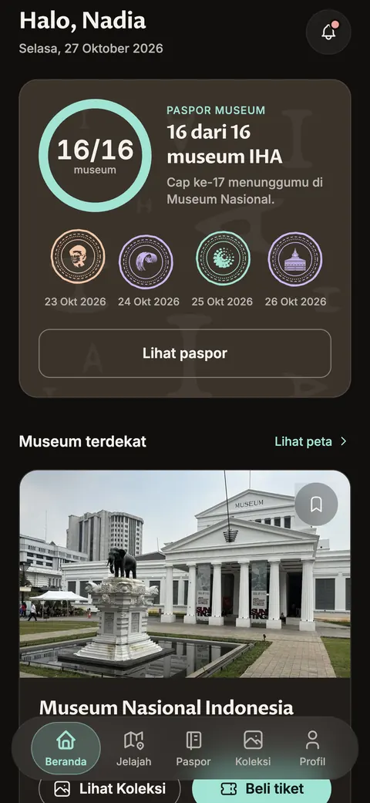
Jalana
Museum punya pengunjung. Belum punya alasan kembali.
Kunjungan berakhir di pintu keluar. Selain tiket, kunjungan itu tidak tercatat.
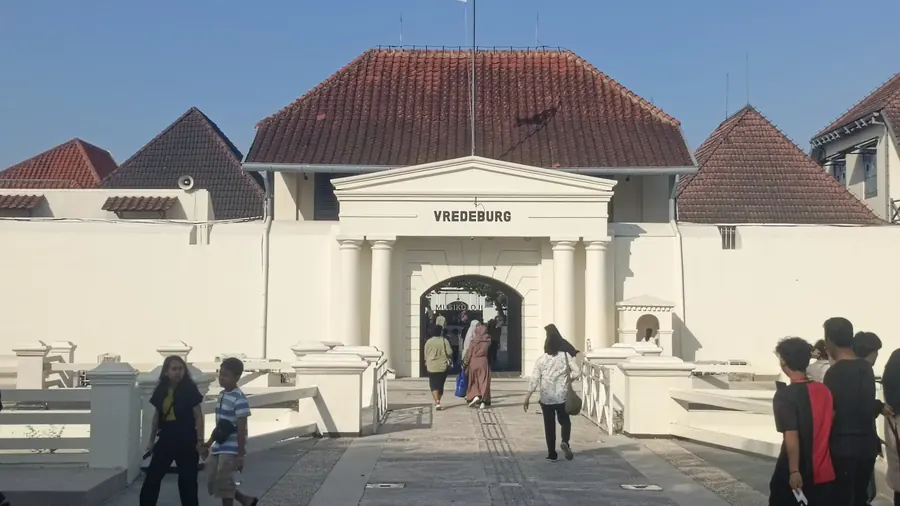
Orang sudah mau mengoleksi kunjungan.
Buku Museum Passport habis terjual, lalu dicetak ulang. Jalana meneruskannya di ponsel.
Kartu koleksi Prajnaparamita dari Museum Nasional, tingkat Langka, dua bintang, Edisi Koleksi. Asal: Singasari, Jawa Timur. Bahan: batu andesit. Ukuran: tinggi 126, lebar 55, tebal 55 cm. Sisi belakang: Museum Passport Indonesia, nomor seri 118.615.
- 5.000
- eksemplar cetakan pertama habis
- 8.000
- eksemplar dicetak ulang
- 4,3 juta
- kunjungan ke museum dan cagar budaya MCB pada 2025
- 16
- museum IHA terdaftar di Jalana
Sumber: Kompas, 17 Juni 2026. Antara, 7 Juli 2026. Liputan6, 8 Januari 2026.
Dari peta sampai paspor.
Ketuk satu layar untuk melihatnya lebih dekat.
Ambil capmu di booth pintu masuk.
Check-in dengan ponsel, lalu cap buku Museum Passport-mu.
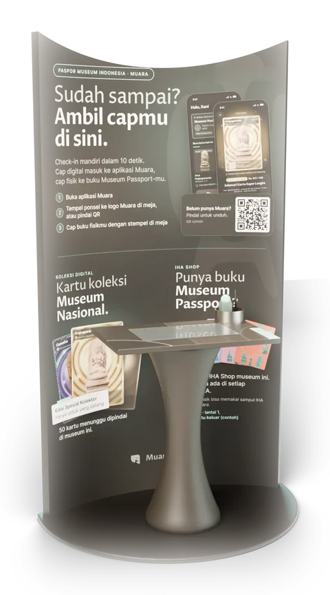
Check-in dengan ponsel
Pindai kode QR di meja, atau tempelkan ponselmu ke pelat NFC.
Cap masuk ke Jalana
Cap digital langsung tersimpan di paspor Jalana.
Cap buku paspormu
Punya buku Museum Passport? Cap halamannya dengan cap tinta di meja.
Kartu, lencana, dan berbagi
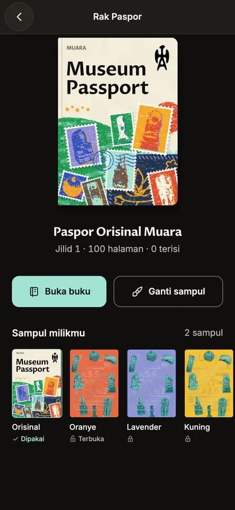
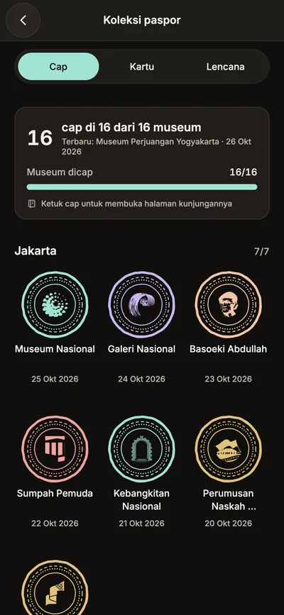
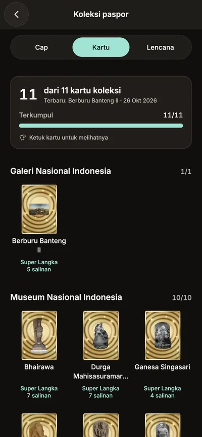
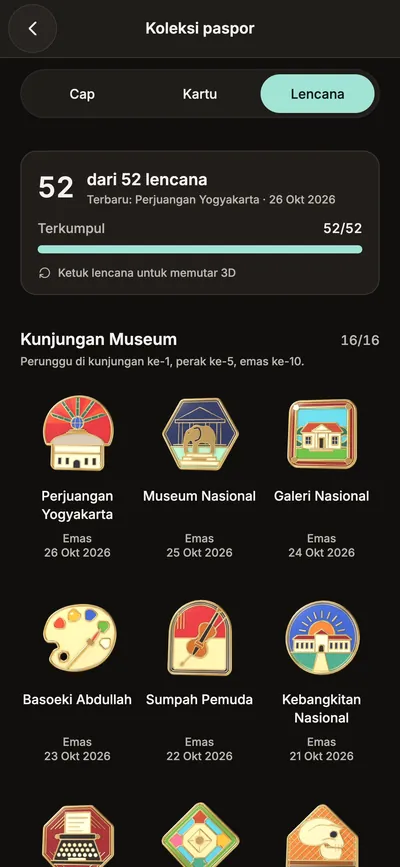
Paspor di ponsel
Sampul paspor tampil utuh. Ketuk atau geser untuk membuka buku.
Sampul paspor tampil utuh. Ketuk atau geser untuk membuka buku.
Rak Paspor menyimpan semua buku dan sampul milik pengguna.
Koleksi paspor menyimpan cap dari setiap museum, dikelompokkan per kota.
Kartu koleksi yang sudah didapat, dikelompokkan per museum.
Lencana kunjungan museum, lencana acara, dan lencana musim.
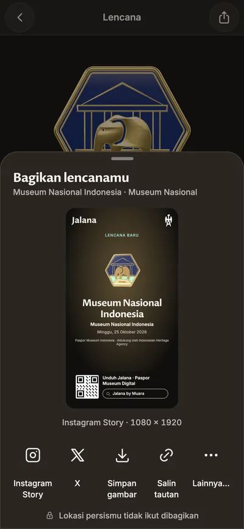
Tiga tingkat kartu
Super Langka, Langka, dan Biasa. Super Langka hanya 100 per koleksi per musim.
Mudah dibagikan
Bagikan kartu, lencana, atau cap ke Instagram Story dan WhatsApp, tanpa data pribadi.
Belajar dari mana saja
Untuk siswa dan warga di pulau lain.
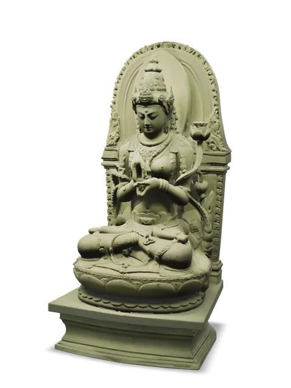
Seret untuk memutar
Putar arca 360° dan perbesar pahatannya, seperti model di samping.
Lihat Prajnaparamita setinggi aslinya, 126 cm, lewat AR di iPhone dan iPad.
Main Harian: tiga permainan singkat dengan arca yang berbeda setiap hari.
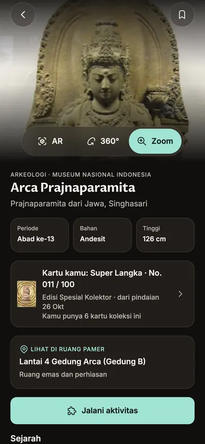
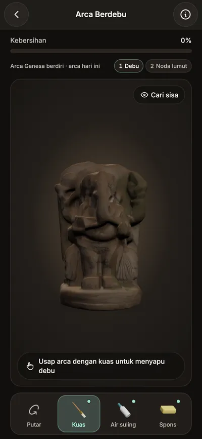
Aman untuk anak
Tanpa iklan dan chat
Profil anak dikelola orang tua
Foto dan memo tetap di ponsel
Tanpa pembayaran selama uji coba
Jadilah yang pertama mencoba.
Isi tiga kolom. Kartumu langsung ikut tampil.
Kartumu sudah masuk.
Waitlist
Semoga aplikasinya cepat rilis dan bisa digunakan saat kami sekeluarga jalan-jalan di museum
Aldira
Kartumu di sini.
Isi formulirnya, lalu kartumu ikut tampil.
Waitlist
Museum melihat kunjungannya
Setiap check-in dan setiap pindai label tercatat di panel museum.
Kunjungan dan jangkauan koleksi
Check-in per hari, pengunjung unik, dan kunjungan ulang.
Asal pengunjung dan privasi
Angka kecil tampil sebagai "<10", jadi tidak ada pengunjung yang bisa dikenali.
Kurator mengubah isi
Perubahan teks koleksi masuk ke draf dulu, lalu diterbitkan.
Halaman lain di panel museum
Paspor kertas tetap
IHA tetap menjual buku.
16 museum IHA
Satu katalog, dengan satu panel untuk museum.
Aset tetap milik IHA
Kurator IHA meninjau isi sebelum terbit.
Setiap museum punya lencananya
Kartu dan lencana memberi setiap museum IHA alasan untuk didatangi.
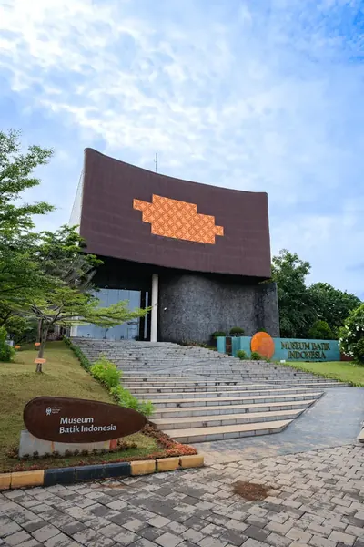
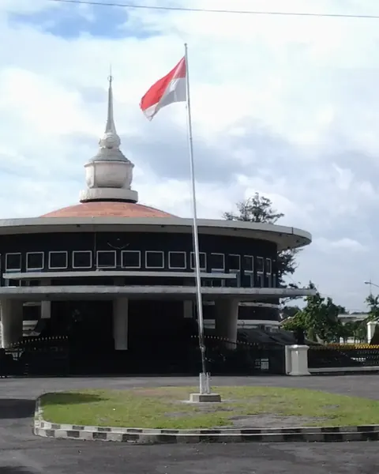
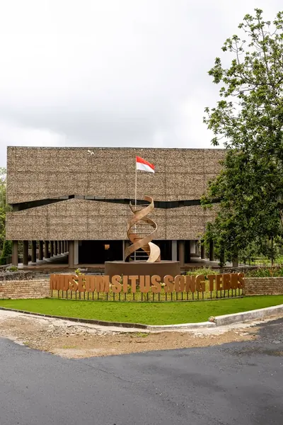
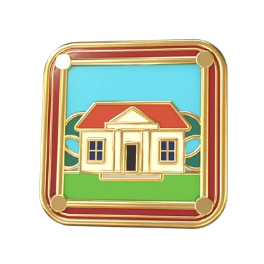
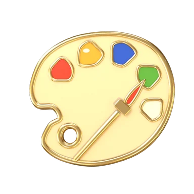
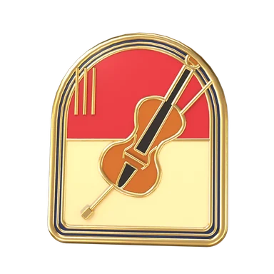
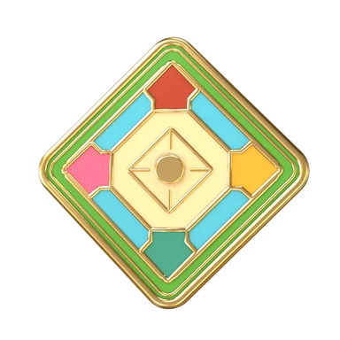
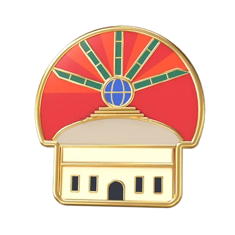
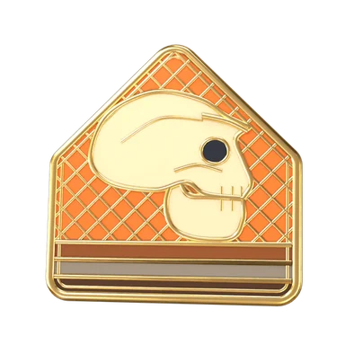
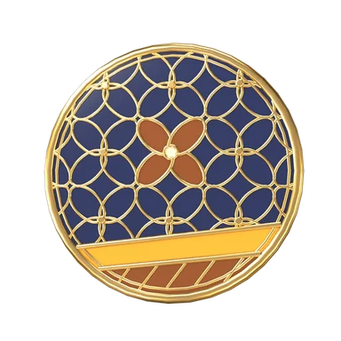
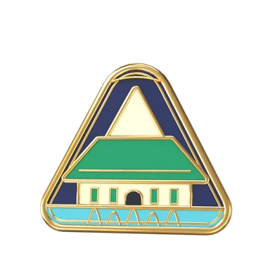
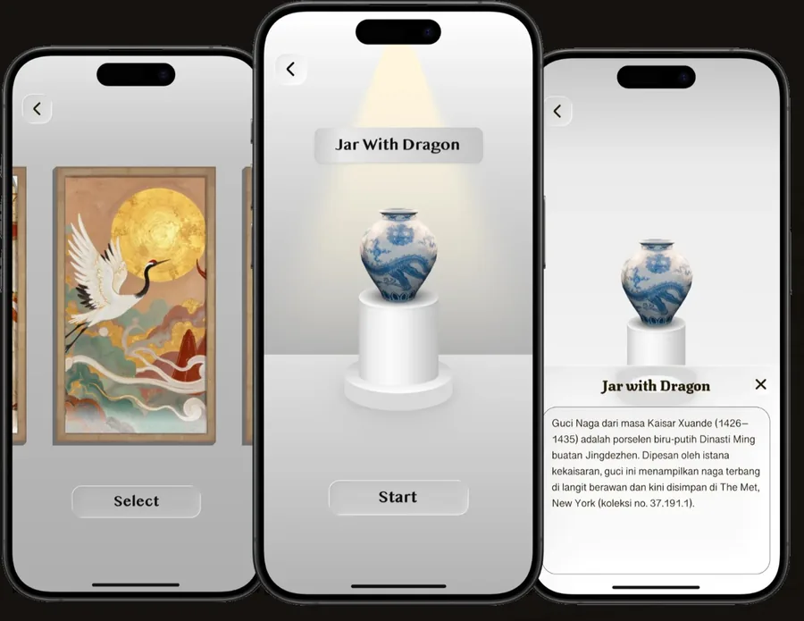
Arcantara
Target rilis awal 2027
Arcantara
EntPoint Studio bersama Muara Studio
Gim restorasi artefak Nusantara untuk ponsel.
Pemain membersihkan dan memulihkan artefak, lalu membuka kisah di baliknya: pilih, pulihkan, temukan, koleksikan, jelajahi.
- Bentuk
- Gim 3D, santai dan edukatif.
- Untuk
- Remaja, SMP dan SMA, semua umur.
- Di luar museum
- Main di rumah, di kelas, atau di pulau lain. Cocok untuk pelajaran Sejarah dan Seni Budaya.
- Di dalam museum
- Usulan Muara: kunjungan yang tercatat di Jalana membuka artefak tertentu di gim.
Visual: EntPoint Studio
Arca repatriasi, 8 objek
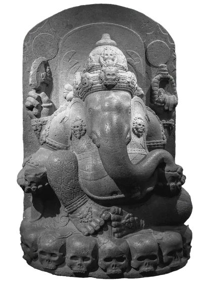
Ganesa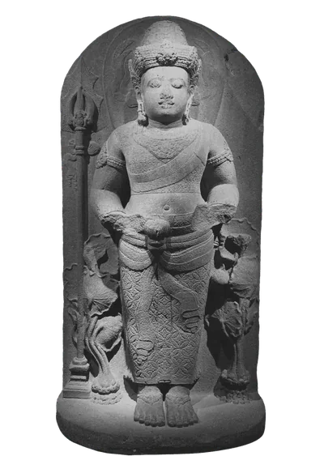
Nandhiswara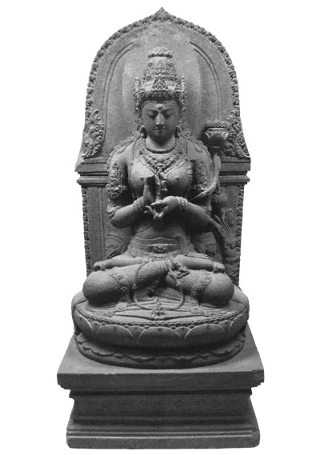
Prajnaparamita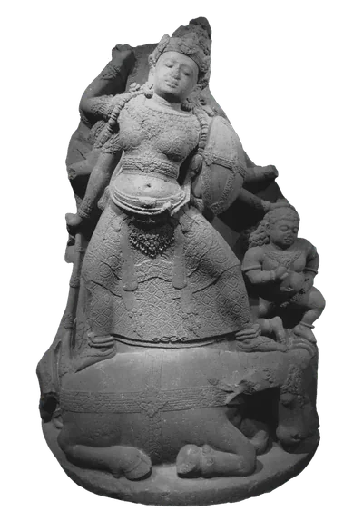
Durga- Mahakala
- Bhairawa
- Nandi
- Brahma
Koleksi Mahakarya MCB, 11 objek
- Arca Wisnu Naik Garuda
- Batik Sogan Parang Ukel Seling
- Pelana Kuda dan Tombak Pangeran Diponegoro
- Fragmen Tempurung Kura-kura
- Kendil Dalung dan Nekara Donker
- Jubah KH Hasyim Asy'ari
- Mahkota Sultan Siak Sri Indrapura
- Mata Panah
- Tengkorak Kerbau
- Replika Rangka ST-1 "Mbah Sayem"
- Master Poster Soekarno
Kemitraan nirlaba
Yang kami mohon dari IHA, dan yang IHA terima.
Yang kami mohon
- Izin memakai aset koleksi di Jalana: foto, data koleksi, model 3D, dan cerita. Untuk mulai, 10 koleksi per museum.
- Akses ke dokumentasi 19 artefak untuk Arcantara: 8 arca repatriasi dan 11 Koleksi Mahakarya MCB. Daftarnya ada di bagian Arcantara.
- Uji coba di museum IHA terpilih, dengan booth check-in dan label QR. Hasilnya kami laporkan kepada IHA.
Yang IHA terima
- Data kunjungan per museum dan per periode, termasuk jangkauan ruang.
- Cap digital untuk Museum Passport, dan booth tempat pemilik buku mengecap paspornya.
- Kanal belajar untuk SMP dan SMA: cerita, 360°, AR, dan gim restorasi.
- Koleksi yang dikenal lebih luas lewat kartu, lencana, dan artefak yang dibagikan.
Aset tetap milik IHA. Isi ditinjau kurator IHA. IHA dapat meminta aset diganti atau diturunkan kapan saja.
Dari pertemuan ke uji coba
Jalana perlu izin memakai aset koleksi. Kami mulai kecil: 10 koleksi per museum.
Minggu ke-1
Pertemuan dan demo
Demo Jalana dan Arcantara. IHA menunjuk narahubung.
Minggu ke-2 sampai ke-4
Surat kesepakatan
Izin uji coba, izin aset, dan daftar 10 koleksi per museum disepakati dalam satu surat.
Minggu ke-5 sampai ke-8
Aset dan kurasi
Aset tahap pertama diserahkan. Kurator IHA meninjau kartu dan cerita. Booth disiapkan.
Setelah persiapan
Uji coba 2 bulan
Jalana berjalan di museum IHA terpilih. Data kunjungannya dilaporkan kepada IHA.
Setelah uji coba
Evaluasi bersama
Hasil uji coba menentukan langkah rilis publik Jalana dan pengembangan Arcantara.
Yang diukur saat pilot
- 12+
- museum aktif di akhir pilot
- 95%
- check-in di booth berhasil
- 20%+
- pengguna check-in lagi dalam 90 hari
- 0
- insiden keamanan anak
Muara Studio membuat Jalana
Studio di Jakarta sejak 2020. Kami juga membangun SIMAKO, sistem pencatatan koleksi MCB.
MuaraStudio
Software house © 2020
muarastudio.comThomas Arya
Product Engineer